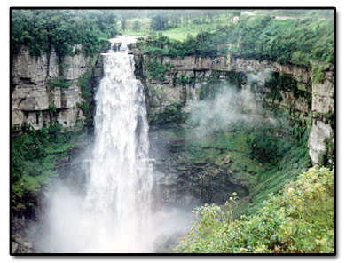
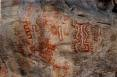
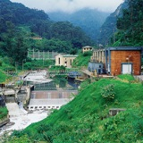

LOCALIZACION GEOGRAFICA
| NUMERO | NOMBRE |
|
1
2 3 4 5 6 7 8 9 10 |
anapoima
anolaima apulo Cachipay el colegio La Mesa quipile San Antonio Tena viota |

Actualmente esta compuesta por 10 Municipios, que son anapoima, anolaima, apulo, cachipay, el colegio, la mesa, quipile, san antonio del tequendama, tena y viota..
ATRACTIVOS TURISTICOS
|    |
"Sitios de Interes Provincia del Tequendama"
Tequendama es una provincia del departamento colombiano de Cundinamarca. Como principal atractivo turístico se encuentra el Salto del Tequendama, catarata sobre el río Bogotá.
El río que forma la terrible caída, tiene aún ahora, diferentes nombres, según la antigua costumbre indígena en el Llano de Bogotá. Su origen más distante está en la Parroquia de Hatoviejo, unas 7 leguas al norte de Guasca. El riachuelo corre hacia el sur rumbo a Chocontá, bajando desde el occidente del Alto de San Vicente, entra por el extremo norte del Llano de Bogotá, entre Suesca y Sesquilé, a la planicie, fluye por entre Calzón, Gachancipá y Tocancipá, forma la cañada entre la colina de forma de isla de Tibitó y la cresta montañosa sobresaliente de la montaña de sal gema de Nemocón, y se reúne bajo el nombre de Rio Tocancipá, con el río Barandillas que fluye desde el Cerro de los Tunjos. A partir de esta unión el nuevo río se denomina río de Bogotá;

|

|